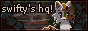
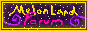
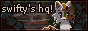
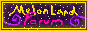
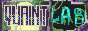
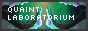
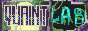
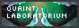

Here a list of awesome people and places. Check them all out! Hit me up, and let's trade buttons! \o/
Buttons from places I love

 

My buttons
 



Please take them with you. Reach out, so I can put you on here as well, so we don't lose each other